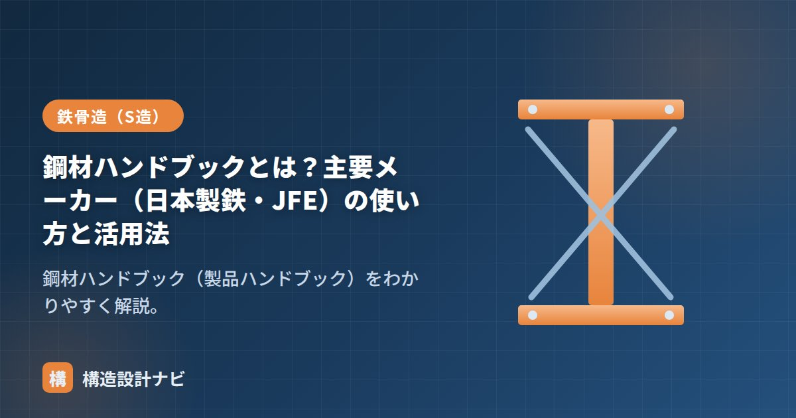

鋼材ハンドブックとは？主要メーカー（日本製鉄・JFE）の使い方と活用法

鋼材ハンドブック（製品ハンドブック）とは、鉄鋼メーカーが発行する、鉄骨に使う形鋼・鋼板などの規格・寸法・断面性能をまとめた資料のことです。構造設計では、部材を選ぶときの「辞書」として日常的に使います。JISに定められた基本の寸法体系に加え、各メーカーが実際に製造・在庫しているサイズや、断面性能の詳細な数値を一覧できるのが特徴で、設計実務者にとって欠かせない資料の一つです。
- 鋼材ハンドブックは、形鋼・鋼板の規格寸法・断面性能・材質をまとめたメーカー資料。
- 主要メーカーは日本製鉄（旧・新日鉄住金）とJFEスチールなど。
- 断面選定・応力度やたわみの検討・積算など、設計の各段階で参照する。
主要メーカー
| メーカー | 補足 |
|---|---|
| 日本製鉄 | 旧・新日鉄住金。国内最大手の高炉メーカー |
| JFEスチール | 高炉メーカー。形鋼・鋼板など幅広い製品 |
| その他 | 電炉メーカー各社（形鋼・小径鋼管 など） |
※新日鉄住金は、2019年に社名変更し現在は日本製鉄です。古い資料では「新日鉄住金」表記が残っている場合があります。
ハンドブックに載っている主な情報
- 規格寸法：H形鋼・溝形鋼・山形鋼・角形鋼管・鋼板などの寸法シリーズ。
- 断面性能：断面積A・断面二次モーメントI・断面係数Z・断面二次半径i など。
- 単位質量：1mあたりの重さ（積算・自重計算に使用）。
- 材質・規格：SS400・SN490B・STKR・BCR/BCPなどの材料規格と機械的性質。
実際の見方
ハンドブックの断面性能表は、多くの場合「サイズ（せい×幅×ウェブ厚×フランジ厚）」を行に、A・I・Z・i などの数値を列に並べた一覧表の形式になっています。例えばH-400×200×8×13を探す場合、まずサイズの列で該当行を見つけ、そこから必要なI（強軸・弱軸それぞれ）やZの値を読み取るという流れです。表の単位（cm⁴、cm³など）を読み違えると計算結果が大きくずれるため、単位の確認も忘れないようにしましょう。
構造設計での活用法
- 梁・柱の断面を仮定するとき、必要なZ・Iを満たす形鋼サイズを表から選ぶ。
- 許容応力度計算やたわみの検討に、I・Zの値を読み取って使う。
- 自重計算・鉄骨数量の積算に単位質量を使う。
- 材種（SN材など）の選定で、溶接性・降伏点・板厚区分を確認する。
断面性能の意味（A・I・Z・i がそれぞれ何を表すか）を理解しておくと、ハンドブックの数値を正しく使えます。自分で計算して確かめたいときは、当サイトの断面性能 計算ツールも活用してください。
注意点
ハンドブックに載っているサイズがすべて即納できるとは限りません。流通量の少ないサイズは受注生産となり納期が長くなることがあるため、実際の発注前には必ずメーカーや商社に在庫・納期を確認しましょう。また版が古いハンドブックでは、廃版になったサイズや、現在の材料規格と異なる旧規格の値が載っている場合もあるため、最新版かどうかの確認も重要です。
断面選定の段階で、ハンドブックに載っているサイズをそのまま発注できると思い込む若手がいますが、流通量の少ないサイズは納期が数か月単位で延びることがあります。私は仮定断面を決めたら、必ず商社に在庫と納期を確認してから図面に反映するようにしています。
鉄骨に使う材料は「鉄骨造に使う鋼材の種類」、設計の基本は「鋼構造設計規準」、断面性能の基礎は「断面二次モーメントとは？」をどうぞ。
断面を選ぶまでの手順（実務の流れ）
ハンドブックは「見る」ものではなく「引く」ものです。実務では次の順に使います。
| 手順 | やること | ハンドブックで見る欄 |
|---|---|---|
| ① 必要な性能を出す | 応力（M・Q・N）と許容たわみを算出 | — |
| ② 必要なZを求める | Z必要 ＝ M ÷ fb | — |
| ③ 候補を拾う | Z必要を上回る断面を探す | 断面係数 Zx |
| ④ たわみを確認 | δ ＝ 5wL⁴/(384EI) が許容内か | 断面二次モーメント Ix |
| ⑤ 重量を比較 | 候補の中で最軽量のものを選ぶ | 単位質量（kg/m） |
| ⑥ 座屈をチェック | 横補剛の間隔・幅厚比ランクを確認 | 断面二次半径 i、板厚 |
| ⑦ 納まりを確認 | 接合部・仕上げとの取り合い | 寸法（H・B・t1・t2・r） |
③と⑤が特に重要です。Zを満たす断面はいくつもあるので、その中から単位質量が最小のものを選ぶと、そのままコストの最小化につながります。ただし④のたわみで決まることも多く、その場合はZではなくIで探し直すことになります。
実例：Zは足りてもたわみでNGになるケース
M ＝ wL²/8 ＝ 12×8²/8 ＝ 96kN・m → Z必要 ＝ 96×10⁶ / 156 ≒ 615×10³mm³（615cm³）
ハンドブックでZ≧615cm³を探すと、H-350×175×7×11（Z＝771cm³、49.6kg/m）が候補になります。ところが、たわみを確認すると——
δ ＝ 5×12×8000⁴ / (384×205,000×13,500×10⁴) ≒ 23.1mm
許容値 ＝ 8000/300 ≒ 26.7mm → ぎりぎりOK（比0.87）
この例ではぎりぎり成立しますが、許容たわみがL/400になれば20.0mmとなりNGです。スパンが長い梁は、強度ではなくたわみで断面が決まる——これはハンドブックを引くうえでの鉄則です。長スパンの場合は最初からIの欄を見て候補を絞ると、無駄な手戻りがありません。
①単位を必ず変換する：ハンドブックはcm系（cm³・cm⁴）、計算はmm系（N・mm）が普通です。1cm³＝10³mm³、1cm⁴＝10⁴mm⁴の換算を機械的に行う癖をつけてください。
②x軸とy軸を取り違えない：Zxは強軸、Zyは弱軸です。梁を横向きに使う場合はy軸の値を見ます。
③版が古いと規格が違う：JISは改訂されるため、既存建物の検証では当時の版を参照する必要があります。
よくある質問
Q1. 鋼材ハンドブックは無料で入手できますか？
日本製鉄・JFEスチールなど各メーカーが、製品カタログや技術資料をWebサイトでPDF公開しています。断面性能表・寸法・単位質量といった実務で使う情報の多くはここで確認できます。より網羅的なものが必要なら、日本鋼構造協会や日本建築学会の刊行物を利用します。
Q2. ハンドブックの数値と自分の計算値が合いません。なぜですか？
多くの場合、①単位の換算ミス（cm系とmm系）、②角の丸み（フィレットR）の扱い、③x軸とy軸の取り違えのいずれかです。とくに角形鋼管やH形鋼のフィレットは手計算では無視されるため、手計算値のほうが5〜10％大きく出ます。設計にはハンドブックの規格値を使ってください。
Q3. 断面を選ぶとき、まずZとIのどちらを見ればよいですか？
スパンが短めの梁（おおむね6m以下）は強度で決まることが多いのでZから、スパンが長い梁や許容たわみが厳しい部位はたわみで決まるのでIから探すと効率的です。どちらの場合も、最後に必ず両方を確認してください。
まとめ
- 鋼材ハンドブックは、形鋼・鋼板の規格寸法・断面性能・材質をまとめたメーカー資料。
- 主要メーカーは日本製鉄（旧・新日鉄住金）とJFEスチールなど。
- 断面選定・応力度/たわみ検討・積算に使う。最新版を確認して使う。
- 流通量の少ないサイズは納期がかかることがあるため、事前の在庫確認も重要。